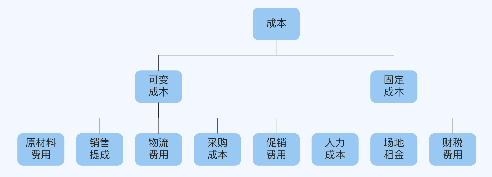
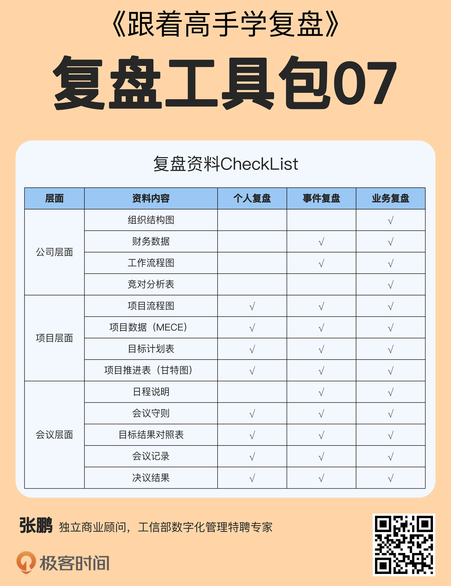

- 00 开篇词 为什么每个人都应该学会复盘？.md.html
- 01 CLAP模型：一个优秀的复盘模型是什么样的？.md.html
- 02 OPTM框架：怎么使用CLAP模型？.md.html
- 03 教练技术：怎么做复盘才能化解冲突？.md.html
- 04 制度和文化：怎么营造复盘环境？.md.html
- 05 三角法：怎么组建复盘团队？.md.html
- 06 MECE原则：怎么准备复盘资料？.md.html
- 07 五步法：如何召开一次高效的复盘会议？.md.html
- 08 事实比较：如何快速比较目标与结果？.md.html
- 09 分析原因：梳理逻辑时怎样找到切入点？.md.html
- 10 洞察规律：怎样更新认知才能找准发力点？.md.html
- 11 OKR：怎样根据复盘结论制定计划？.md.html
- 12 Double Check：怎么检查评估一次复盘的效果？.md.html
- 13 案例导学：我是怎么帮助企业做复盘的？.md.html
- 14 战略升级：5年增长100倍的跨境电商做对了什么？.md.html
- 15 业务关键点：改进一个点业绩增长50%？.md.html
- 16 组织结构设计：变动一个职位，就能带来100万_月的增量吗？.md.html
- 17 高效赋能：怎么建立流程才能把人效提升3倍？.md.html
- 18 人才培养：怎么把人才转化成实际生产力？.md.html
- 19 预算制定：人头和财务预算到底怎么定？.md.html
- 春节荐书（一）《原则》：在不确定中找到确定.md.html
- 春节荐书（二）《人类简史》：故事的力量.md.html
- 结束语 复盘，见天地见众生见自己.md.html
- 捐赠
06 MECE原则：怎么准备复盘资料？
- 你好，我是张鹏。
上一讲，我介绍了组建复盘团队的方法，这样你就可以完成复盘的人员准备工作。今天这一讲，我会介绍准备复盘资料的方法，学完之后你就可以完成复盘的资料准备工作了。
你可能会想，准备资料还需要专门去学吗？不就是写写工作的总结，准备一些图表就行了吗？有些公司甚至都准备好了固定的模板，我只要把最重要的数字填进去就行了。
其实并不是这么简单。很多人做复盘之所以得不出正确的、有价值的结论，往往就是因为准备资料时敷衍了事。这就好比打仗，如果没有掌握准确的情报，又怎么把握战机，制定合理的作战计划呢？
常见问题
我想请你回忆一下，开复盘会议的时候，你有没有遇到过有下面这样的情况：
- 信息重复：会议中重复的问题多，包括：
- 自己跟自己重复，看似列了十多条，实际上归纳整理成3～4条就够了。
- 自己跟别人重复，轮流发言，没有分工，前面提到的问题，又翻来覆去地说。
结果就是大家觉得会议拖沓，久而久之，参与复盘会议的热情也开始降低了。
重点环节数据缺失：在复盘会议中，讨论的议题遗漏了关键数据，被人指出的时候，临时去找又来不及，结果讨论就无法有效地进行下去了。
内容散乱：内容都有，但是特别散，不同部门很难通盘考虑自己的工作和其他部门的工作之间的关联关系，或者说关联的颗粒度不够细致，导致逻辑串联不起来。结果，可能的结果是更爱发言的人主导了整个复盘会议，会议失去了把控全局的平衡感。
如果你也被这些情况困扰过，那么不妨试一试MECE原则。
MECE原则
MECE的全称是“Mutually Exclusive, Collectively Exhaustive”，意思是“相互独立，完全穷尽”。
它是麦肯锡的第一个女咨询顾问巴巴拉·明托（Barbara Minto）在《金字塔原理》（The Minto Pyramid Principle）中提出的一个很重要的原则， 就是对于一个重大的议题，能够做到不重复、不遗漏地进行分类，从而有效地把握问题的核心，找到解决问题的方法。
MECE原则要怎么理解呢？不知道你还记不记得，在第2讲中我举过一个烘焙公司的例子。现在假设你是一家门店的店长，正在准备复盘要用到的客户数据，你会怎么对客户进行分类呢？
第一种分法，也是最简单的分法，就是根据性别把客户分为男女两类。这样每个人都能归入其中一类，这就叫“不遗漏”，并且没有人会同时属于这两类，这就叫“不重复”，显然这种分法是符合MECE原则的。
这样分类之后，你就可以区分不同性别客户在购买产品时关注的价值点，以便设计不同产品的包装和摆放位置，从而根据消费者在店内的动线设计自己的MOT（Moment Of Truth，这个理论用于设计客户在每个决策点上的峰值体验）。
第二种分法是根据年龄把客户分为“10岁以下”“10到20岁”“20到30岁”，一直到“60岁以上”，这也是符合MECE原则的。
第三种分法是同时考虑性别和年龄，比如把“10岁以下”进一步分成“10岁以下男性”和“10岁以下女性”，这也是可以的。
这样分类之后，你就可以分析在不同时间段的主流客群，再针对这些客群喜欢的产品细分品类进行映射，针对特殊节假日（比如儿童节、情人节、母亲节和父亲节等）搞一些相应的活动，制定相应的备货计划和销售策略。
但是，如果把“成年女性”进一步细分为“学生”“老师”“公司职员”和“家庭主妇”，就不符合MECE原则。一方面，作为个体户的女性无法被归入其中，出现了遗漏；另一方面，老师也有体制外的，可能和公司职员重复。
这种情况下，你可能会眼睁睁地失去一些客户群体，或者在做市场分析的时候产生混乱。
所以，如果你想要得到准确的复盘结论，那么在资料准备阶段，就必须着重检查是否有重要因素被遗漏，以及是否存在相同要素的重复，尤其是遗漏，因为它会大幅削弱说服力和解决问题的效果，这一点需要特别留意。
不过，虽然MECE原则确实非常重要，但是过度拘泥于MECE就会本末倒置，反而会对逻辑思维产生阻碍。 所以有的时候，你也可以活用“其他”这一项，适当简化分析过程。
注意事项
下面，我来说明一下使用MECE原则时的注意事项。
1. 速度优先
真正百分之百的无遗漏和无重复，在实操过程中其实是很难做到的。哪怕是把客户分成男女两类，可能也不严谨——“人妖”怎么算？性别认同障碍的客户怎么算？
一旦过度追求细节，就容易浪费时间，干扰正常思路。在商业活动中，速度是第一位的，存在一些不够精细的部分是可以容忍的，重要的是一定要保证高效地推进工作进度。
所以你必须清醒地认知到，重复是难以避免的，尽一切可能确保没有重大的遗漏就行了。
2. 明确目的
比如说烘焙公司的目的是开发和销售产品，所以会按性别、年龄和职业来分。如果你按照有没有房、有没有车、户口是城市还是农村这些标准来分，结果可能没什么意义。
明确最终的目的，才能做出有价值的分类。
3. 打破定势
就算是在同一个行业、同一家公司、基于同一个目的，分类方式也未必是固定的。有的时候我们恰恰是被思维定势给限制了。
跟你分享一个故事吧。刚才我提到的这家烘焙公司的老板是从一家门店开始创业做起来的，开了十几家门店之后，她有了更大的梦想，于是开始对标行业龙头H公司。
经过对H公司的实地调研和资料对比，她发现自己的门店无论是人效还是坪效，都不比H公司差，但是平均到单店的业绩却比H公司差很多（H公司已经上市，经营数据都是公开可查的，单店业绩=总业绩/门店数量）。
后来，她终于找到了原因。原来自己用MECE原则划分客户的时候，一直是按照单个门店的分法，分成不同年龄段的男性和女性；但是H公司却从整体上把客户分为个人客户和企业客户。企业客户贡献了差不多H公司一半的业绩，但这个市场她一直都没有做。
这个发现让她如获至宝，于是她马上成立了大客户部专门负责企业客户，而个人客户继续交给门店负责，于是在接下来的几年里又取得了很大的增长。
其实无论是创业者还是上班族，多数人都是从基层一点点走上来的，每次升迁，需要更高层次的视野和格局来支撑。如果你能够打破思维定势，及时更新使用MECE原则的方式，会少走很多弯路。
MECE的应用：逻辑树
刚才解释MECE原则，我用的主要是客群分类的例子。不过MECE原则的应用远不止这一项，在复盘过程中，还有一个非常重要的应用值得专门介绍一下，那就是逻辑树（Issue Tree）。
逻辑树是基于MECE原则把主题逐层分解的工具，具体做法是把作为整体的主题放在最上方（或是最左边），然后自上而下（或从左到右）展开分枝，写出要素。因为分解之后的形状很像树木，所以才叫这个名字。
比如复盘会议需要讨论如何减少成本，我们就可以使用逻辑树来对成本进行分析（如下图所示），看看从哪一块成本入手效果最明显。

使用逻辑树来准备资料和数据的好处在于：
- 提前完成去重工作，能提升会议的效率和大家的参与度；
- 重要信息不会遗漏，避免在会议中讨论议题时，出现论据缺失的情况；
- 提前完成对资料的逻辑梳理，避免在会议上讨论失去平衡，在某些局部问题上纠缠过多。
所以，通过逻辑树看问题或者看业务，很容易看清全局，理解公司业务和自己负责的模块之间的关系，经过逻辑分析之后再聚焦到某个局部展开，最终找到问题的关键并解决问题。
复盘需要什么资料？
了解了MECE原则之后，我再给你介绍一下在复盘中常用的资料。
资料要素
每个团队在复盘过程中用到的图表模板可能不同，但是一定不能缺少以下三条要素。
要素一是目标设定，也就是对设定的目标做出符合MECE原则的分类以便观察。想做好目标设定，需要注意以下4点：
- 高层共识：公司的目标至少要在分管各个业务模块的O级或者VP级取得全体共识。
- 上下对齐：团队的目标要和公司的目标，以及团队中个人的目标做对齐。
- 左右拉通：自己的目标需要和业务或者价值链的上下游部门的目标能够对应得上。
- 归类聚集：光有数字型的目标，大家很难理解这些数字之间的关系到底是什么、这些数字背后的意义是什么，所以需要对目标做归类聚集并给出文字说明。
要素二是每个目标要有对应的行动计划，包括3W3H要素：
- What：计划内容和对应策略是什么？
- Who：谁负责？
- When：截止时间点是什么时候？
- How：具体步骤和任务分配是怎样的？
- How To Measure：结果怎么衡量？
- How Much：需要多少Head Count和预算？
要素三是结果呈现，与目标的行动计划格式一致，根据实际情况填写就行了，这一部分内容我会在第11讲详细说明。
CheckList
基于这些要素，我整理了一份关于复盘资料准备的CheckList供你参考。

总的来说，复盘资料可以分为公司、项目和会议三个层面，业务、事件和个人三种不同类型的复盘需要的东西也不完全相同。在这份CheckList中，打√的是我建议的必选项，具体内容你可以根据自己工作的实际情况进行修订。
下面，我专门介绍一下会议层面的资料。
- 日程说明：主要是介绍会议的流程以及每个环节的议题是什么，大概需要多长时间。
- 会议守则：这个部分采取列表的方式告知大家，会议要求每个人都要遵守的规则。比如手机静音，发言需要举手，不要迟到，发言注意不要超时等。
- 目标结果对照表：这个主要用于比较目标和结果，在第8讲中会详细说明。
- 会议记录：记录会议过程中大家的发言、图片或者照片影像资料。
- 决议结果：整个复盘会议的最终输出，包含达成共识的部分，以及遗留问题。
小结
这一讲，我介绍了MECE原则，它可以帮助你系统地整理复盘资料。现在，我们回顾一下重点内容。
- 资料准备得不好，会导致复盘会议中出现信息重复、重点环节数据缺失以及内容散乱的问题；
- MECE最大的好处，是可以确保数据准备做到不重复、不遗漏，再加上逻辑树就可以很好的梳理议题的业务逻辑，让复盘参与者能够进行全局观察和理解公司业务和自己负责的模块之间的关系。
- 根据MECE原则，我给出复盘资料的要素和CheckList，你也可以根据实际情况进行调整。
思考题
这就是今天的全部内容，最后留一道思考题给你吧。
按照这一讲学到的知识，构建一下你最近参与的一个项目的逻辑树，并检查是否符合的MECE原则。
欢迎你把答案写到留言区，和我一起讨论。
© 2019 - 2023 Liangliang Lee. Powered by gin and hexo-theme-book.